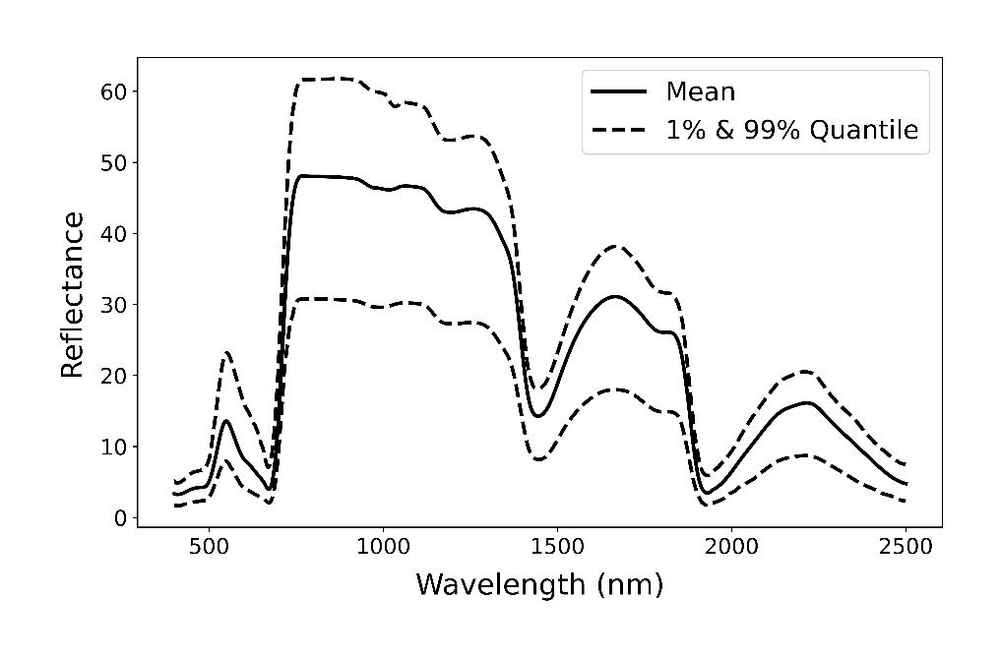
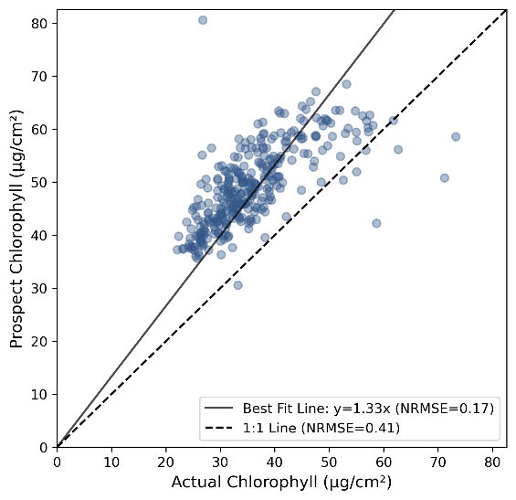
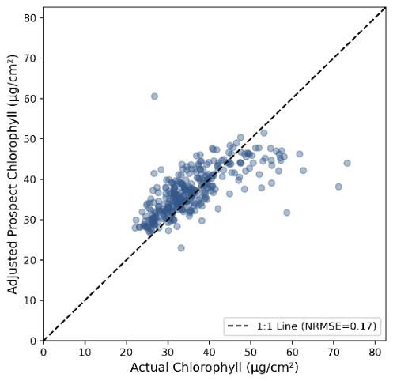
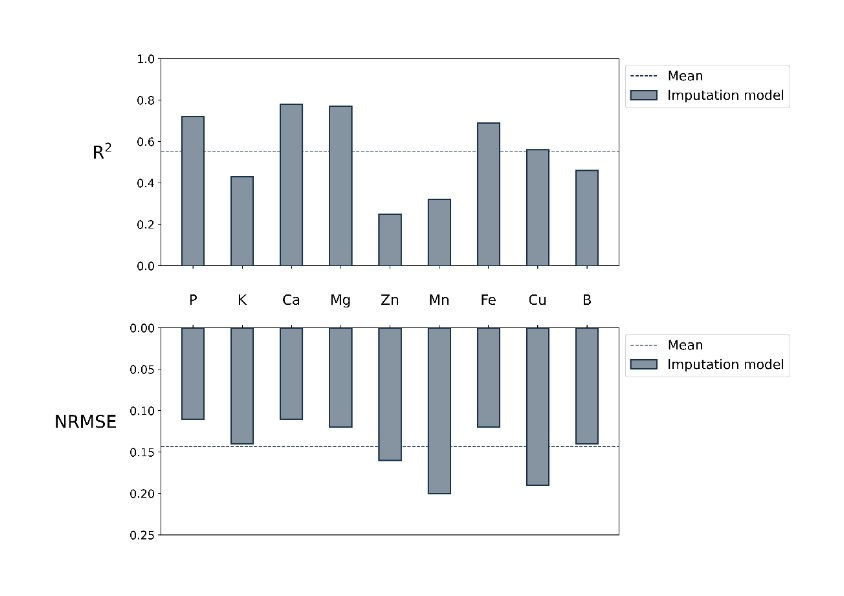
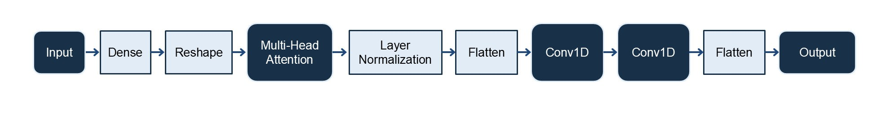
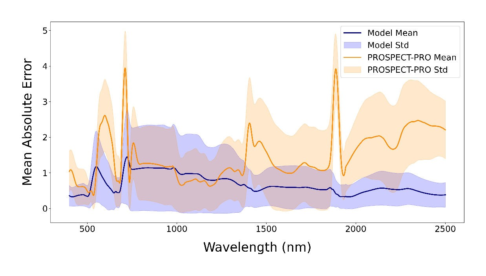

📈 Leaf Spectral Reflectance Prediction Using Multi-Head Attention
Parastoo Farajpoor, Alireza Pourreza, Mohammadreza Narimani, Ashraf El-Kereamy, and Matthew W. Fidelibus
Proc. SPIE 13475 · 134750V · 28 May 2025 · Autonomous Air and Ground Sensing Systems for Agricultural Optimization and Phenotyping X
Digital Agriculture Laboratory · University of California, Davis · University of California, Riverside
Trait-to-Spectra, Not Spectra-to-Trait
Most remote-sensing pipelines invert spectra to estimate traits. The reverse problem—predicting full leaf reflectance from measured traits—matters for radiative-transfer validation, synthetic dataset generation, and understanding which biochemical drivers shape the spectral continuum.
Searching for leaf spectral reflectance prediction, multi-head attention hyperspectral, or PROSPECT-PRO grapevine, you will find this SPIE study coauthored by Mohammadreza Narimani (UC Davis) with Farajpoor, Pourreza, El-Kereamy, and Fidelibus. A multi-head attention network maps traits to spectra and is compared against PROSPECT-PRO forward simulations, reporting strong agreement (R² 0.84, NRMSE 1.52% in the published summary).
Most phenotyping models estimate chemistry from reflectance. This SPIE paper reverses the mapping: it predicts full leaf spectra from 16 biochemical and structural traits, so grapevine-specific radiative behavior can replace a generic PROSPECT-PRO forward run when species matter.
Leaves were collected from Sunpreme, Flame Seedless, and Solbrio at Kearney Agricultural Research and Extension Center (2021–2023): 2,305 leaves (992 unique samples) across canopy heights and phenology. Spectra (SVC HR-1024i, 400–2500 nm) were interpolated to 1 nm and Savitzky–Golay smoothed. Missing Nstruct, anthocyanins, carotenoids, and some chlorophyll values were filled with inverse PROSPECT-PRO after a chlorophyll scale of 0.75.

Inverse PROSPECT-PRO chlorophyll was systematically high. A slope-based correction (scale 0.75) aligned estimated chlorophyll with wet-lab values before those traits entered the forward model.


Attention Architecture and Error Versus PROSPECT
A nutrient-imputation CNN supplied missing minerals where needed. The forward model then maps the 16-trait vector through dense layers, reshape, multi-head attention, layer normalization, and 1-D convolutions to a full reflectance curve. Evaluation used stratified five-fold cross-validation.



Compared with PROSPECT-PRO in forward mode, the neural network has lower mean absolute error, with the largest gains in the near-infrared and shortwave-infrared, where grapevine structure and biochemistry depart from a generic leaf library. The intended uses are canopy trait retrieval, vineyard monitoring, and species-aware remote-sensing simulations.
Paper and Citation
Parastoo Farajpoor, Alireza Pourreza, Mohammadreza Narimani, et al. "Leaf spectral reflectance prediction using multihead attention neural networks", Proc. SPIE 13475, Autonomous Air and Ground Sensing Systems for Agricultural Optimization and Phenotyping X, 134750V (28 May 2025); https://doi.org/10.1117/12.3061298
Please cite the publisher version when you use this work. The summary on this page is a research card, not a substitute for the article.
Contact
Mohammadreza Narimani
PhD Candidate, University of California, Davis